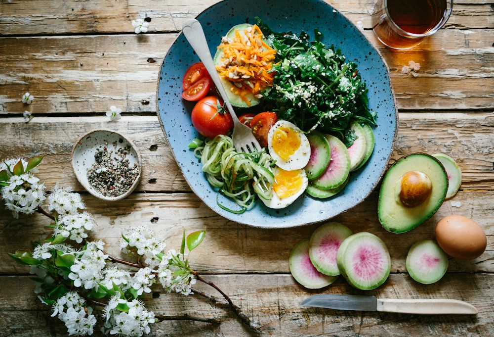

مطبخ البيت، بنكهة جديدة
وصفات بتلمّ العيلة
وصفات بتلمّ العيلة
من أول خطوة لآخر لقمة
مكونات موجودة في مطبخك، خطوات واضحة مكتوبة بهدوء، وطعم يستاهل تقعد على السفرة شوية زيادة.
- +120
- وصفة مجرّبة
- 18 د
- متوسط التحضير
- 4.9
- تقييم القرّاء


20 دقيقةوقت التحضير
الأسبوع
مختارة بعناية
ابدأ من هنا
تلات وصفات بيحبها الناس أكتر من غيرها. كل واحدة واضحة، سريعة، وطعمها مضمون.
 وصفة النهاردة
وصفة النهاردة
بزيت الزيتون والليمون
اختيار الشيف
سلمون مشوي
سلمون مشوي
بالليمون والأعشاب
قطعة سلمون طازة، زبدة بالليمون، ورشة أعشاب. حاجة بسيطة على الورق، لكن طعمها يخلي أي عشا عادي يبان مناسبة.
- 01 جاهز في 25 دقيقة
- 02 مكونات بسيطة وموجودة
- 03 يقدم مع أرز أو سلطة
على مزاجك
اختاري وقتك
فطار سريع قبل الشغل، غدا خفيف، عشا يلمّ الكل، أو حلويات تخلص بيها اليوم.

الفكرة ببساطة
الطبخ مش امتحان.
الطبخ مش امتحان.
هو وقت هادي على السفرة.
بنكتب الوصفة زي ما بنقولها لصاحبنا: من غير كلام فلسفي، بكميات مظبوطة، وبخطوات تقدر تمشي عليها وانت مرتاح.
- وصفات مجرّبة في مطبخ حقيقي
- كميات قابلة للتغيير حسب عدد الأفراد
- وضع طبخ خطوة بخطوة مع مؤقت
رسالة واحدة كل أسبوع
وصفة واحدة، كل خميس
مفيش إزعاج. وصفة مختارة، حاجة صغيرة تتعمل في البيت، وحكاية قصيرة عن الطبق.